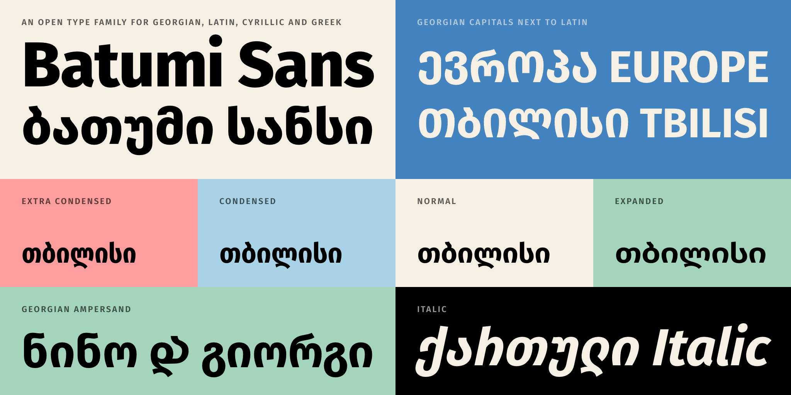
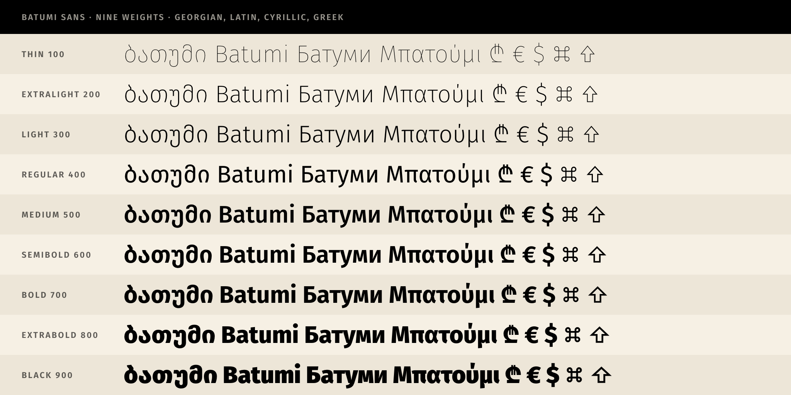

Batumi Sans is a type family for Georgian, Latin, Cyrillic and Greek,
designed for Borbalo by Koba Jgenti. It is
built on FiraGO and Fira Sans and
adds what those families did not have for Georgian: condensed and expanded
widths, and a rounded companion, Batumi Sans Rounded.
Weight (wght 100–900) and width (wdth 75–115) are
variable, and the italic is a true cursive.
To contribute, see github.com/Borbalo/batumi-sans

The family covers all four Georgian scripts: Mkhedruli, Mtavruli, Asomtavruli and Nuskhuri. Georgian was designed first and at every width, and the widths keep the weight of the stems as letters get narrower or wider.
Mtavruli, the Georgian capitals, is usually drawn with every letter at one height, which makes some letters hard to tell apart. In Batumi Sans the capitals keep a small part of the rise and drop they have in lowercase, so that Პ / Ვ / Კ and Ო / Რ differ in outline while a word such as ᲔᲕᲠᲝᲞᲐ still lines up with Latin capitals.
Batumi Sans also has a Georgian ampersand, a sign made from the letters
დ and ა of the
Georgian word for "and". It appears when & is typed in
Georgian text, as in ქვევრი & ღვინო. The
word და is never replaced, and the Latin
ampersand stays as it is in Latin text. Stylistic sets ss07 and
ss08 turn the Georgian sign on anywhere.
Batumi Sans supports Latin, Cyrillic and Greek, including polytonic Greek, the letters used to romanize Arabic, Persian and Hebrew place names, and the diacritics used in Kartvelian linguistics. It includes the lari sign (₾) and other currency signs, and a set of arrow and keyboard symbols for interfaces.

Batumi Sans is derived under the SIL Open Font License from FiraGO (bBox Type GmbH and HERE Europe B.V.), Fira Sans (The Mozilla Foundation, Telefonica S.A., Carrois Corporate GbR and bBox Type GmbH) and Noto Sans Georgian (Google LLC), from which Asomtavruli and Nuskhuri are adapted.
„ბათუმი სანსი“ (Batumi Sans) ქართული, ლათინური, კირილური და ბერძნული დამწერლობისთვის შექმნილი შრიფტების ოჯახია. ის კობა ჟღენტმა „ბორბალოსთვის“ შექმნა. ოჯახი FiraGO-სა და Fira Sans-ს ეფუძნება და ღია ლიცენზიით (SIL OFL 1.1) ვრცელდება. წონა და სიგანე უწყვეტად იცვლება. ოჯახში შედის კურსივი, ქართული ამპერსანდი და მთავრული, რომელშიც ასოებს სიმაღლის მცირე განსხვავებები აქვთ შენარჩუნებული.
პროექტში მონაწილეობისთვის იხილეთ github.com/Borbalo/batumi-sans